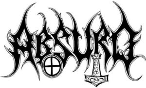

Under the moniker “Dark Mark Doom” Sebastian Schatten was one of the founding members of the infamous German horde ABSURD. From 1992 to 1999 Schatten was the main songwriter behind the band’s releases. The strength of his compositions and his enormous influence on the band’s identity can be felt in the last release of the German tyrants, the Mcd “Grabgesang” released in August 2021 and which basically consists of old tracks composed by Sebastian, never finished and never released. previously. In 2002 Sebastian joined WOLFSMOND expanding the creative boundaries of his compositions and leaving his mark once again. With three albums in their discography, the band is getting ready to record what will be their fourth release and which will bring some reformulations to the band’s lineup. Sebastian Schatten has always been a figure shrouded in controversy, but controversy is the focus of gossip magazines and that’s something we at BLACK METAL TERROR abhor and prefer to leave to the weaklings of the modern world. In the following interview we have a very nice conversation with “Dark Mark Doom” who talked about Absurd, Wolfsmond and several of his other projects past and present…
You grew up in a former East Germany and saw the fall of the Berlin Wall and subsequent German reunification from a very different perspective than ours.
-How was your relationship with music in the years before this reunification?
-From a musical point of view, what changed with the fall of the wall?
First, you must imagine that “Berlin Wall” is merely a synonym for an absolute border dividing two parts of the same country for some decades. This border (known as wall) was nearly impervious to everyone trying to get to Western Germany, there were soldiers with guns, land mines, spring guns and more. Therefore, there were many problems for normal people in East Germany getting music from Western countries. Some albums had been bootlegged by Poland or Czechoslovakia. We mostly had to wait patiently by our radio, always ready to push down the “record” button for our tapes.
I have listened to Heavy Metal since I was 10 years old, always looking for more songs from more bands. I was strongly impressed and influenced by Slayer, Metallica, Sodom, Venom, Manowar, Kreator, Bathory and so on. I kept listening to Metal bands from East Germany, too but of course they were not as cool as the bands from non-socialist countries in my view. At that time, I’ve been listening to Metal only.
After the fall of the wall, we were able to visit gigs from Western bands and could buy the albums we adored so much (but while being young, we mostly could not afford that). At the same time some changes in music took place: Death Metal started getting bigger, Bathory discovered ancient Viking pathways and Black Metal evolved the way which made this music so infamous, truly misanthropic and anti-commercial. I figured out that the works of Beethoven, Bach, Prokofiev or Wagner are blueprints for Metal. My generation grew up witnessing a whole system going down while other forces took over the land. We were rebels against church and a system that would not fit our values and needs.

How did this event and the changes resulting from it influence your musical formation? Do you think that the experience mentioned above was determining in some way for you as a composer, since the type of Black Metal that you came to create in your first band, ABSURD, was very different from everything that happened at the time on the world scene ?
I started learning to play a guitar in 1987 – after 1989 I’ve felt the growing need to make my own music, I wanted to play songs I’ve had in my mind but no band had played them yet. Finally, I was able to buy my first electric guitar, started writing some songs – and in 1992, we’ve launched Absurd. The feeling of satanic, anti-christian rebellion as well as waging war on society and establishment had been deriving from the experience of a collapsing system being replaced by a money-driven civilization with christian values. The musical result was a mix of what we wanted to create and our technical inability. Anyway, I never wanted to make music which other bands had already done hundred times better and our music was always true and rebellious.
In 1999 you joined HALGADOM, having recorded two albums with the band. How were the years of contribution with the band? This project has a facet more focused on the neofolk sound. Did your years with the band in any way contribute to you deciding to form the IN ACHT UND BANN project in 2002?
I’ve really enjoyed that collaboration. It was good music. My decision to leave the band derived from� some changing views on several political aspects and the fact that it wasn’t completely “my” music while Frank had written all music and lyrics.
My first Neofolk songs are from 1996. Being part of Halgadom had spurred me recording my own Neofolk music; the In Acht & Bann album therefore consequently had been released on Sonnenkreuz, Frank’s label.
With IN ACHT UND BANN you recorded the great album “Auf Runenpfaden Zwischen Den Welten” which has a very melancholy and, I believe, introspective feeling. What are the main inspirations and objectives with this project? Why was nothing else released under that name? (Personal note: Man, the track “Gleich Licht in finsterster Nacht” is one of my all time favorite songs)
It’s an honour to read these praiseful words. I had run the band with my former wife, at that time we’ve been deep into Germanic heathendom, rune magic and the myths of Atlantis. It was a time when I was way more wandering in� the woods and mountains than being at home, my impression has mostly been the murmurs of the trees, the burbling of small rivers, the singing winds, roaring storms – or walking through enchanted mist or night. And of course we’d tried to express our knowledge in the lyrics.
When we got divorced, I didn’t want to go on with this name. After many years I had written many new songs; I’m going to record them and I will release them. Same music, new songs, better quality. I am often doubting myself and the things I do – so, it took me this long time but I guess my songs should not rot in some drawer.
Still in 2002, you finally joined WOLFSMOND releasing, shortly thereafter, the great album “Des Düsterwaldes Reigen”, how did you get into the band and what was your contribution to that album?
It is not precisely correct saying that I joined Wolfsmond. In 1994/95 I had recorded a four track rehearsal tape with songs not fitting Absurd. I had the name Wolfmoon in mind, deciding a German name should express better what I meant and the result was Wolfsmond. At the same time I found out that Managarm had done the same hundreds of kilometres away – we got in contact and decided some times later to make our music together. For the first two albums we wrote our songs, each one in his own style. You can see in the song credits that we sometimes complemented the other‘s ideas.
�
At the time of the release of this first album, I saw many people making comparisons pointing out the musical similarities with your old band ABSURD. In my personal opinion, the similarities would practically boil down to your vocals since the musical scope of WOLFSMOND in my view is much greater, perhaps due to the different musical influences of the different members, do you agree? Tell us more about it …
Of course many people would compare „Des Düsterwaldes Reigen“ to Absurd. I had tried to do something new with Wolfsmond but I could not hide my style of composing music. And of course my voice was still my voice, it was inevitable to find these musical similiarities. On the other hand, we had very different influences and you hear a big difference between Managarm and me. My voice had stayed the same, my music had changed a bit (more under the influence of marshes, cold mist, hopelessness and death).
This album ends with the sensational and morbid track “Greet the Beyondworld” which in addition to being the only one with English lyrics still has singing vocals.
-Why use so few English lyrics?
-When did you realize that you could sing in a more melodic way and bring that particularity to the music you were making? What are your main influences on vocals?
While we‘ve had English lyrics on our demos/rehearsals, we came to the conclusion that we could express ourselves way better in German. There are so many words expressing darkness, death or fear – native language should be used like a sharp blade and a firestorm at the same time. Language is a weapon. But sometimes singing in English is great. Why should I bother translating lyrics when the whole song is unfolding in the darkness behind my closed eyes?
In the very beginning of Absurd, I tried singing in a melodic way only. It didn‘t work well, it lacked of the violence I‘d like to express. For the Wolfsmond songs I had to work out a contrast to the cruelty of our lyrics – maybe the influence of Doom Metal which I appreciate a lot. The morbidity in „Tod ohne Traum“ or „Greet the beyondworld“ as well as the glorious finale of „Auf den Schwingen des Drachen“ would not have been the same without melodic singing.
In contrast to all the morbid mood of the track that closes the first album, the second one “Tollwut” came in 2005 with a faster and more violent sound landscape as it is already shown in the opening song “Schwarzer Dunst” which also presents improved guitar harmonies and during the course of the compositions we see a contrast between your vocals and those of Managarm. Were these characteristics something deliberately thought out, or was it something that came naturally?
These characteristics evolved naturally. I‘ve never intended to create some special sound or atmosphere, neither did Managarm. We just put into music and lyrics what dwelled inside us. It is correct that we‘d improved our musical skills; this had an impact on our songwriting, too. Making music means opening the gate to the otherworld. Under the wolfmoon, some men turn to werewolves, also without intending it. I‘m writing songs exactly this way: it just appears that something gruesome, dark and wicked must break through.� I just open the gate. We‘ve recognized these aspects without paying too much attention.
In 2010 with the release of the third album “Wolfsmond III” you left the guitar to focus solely on vocals. Right? What were the reasons that led to this decision?
We decided to do this due to the fact that I‘ve lived about 200 km away from Managarm and Basilisk. Practising together was diffiult at that time – so, we decided to part it. Of course I‘ve been composing and practising, too, but in the end it seemed to be more useful for me to focus on the vocals and leave the guitars for Managarm in studio.
Some time ago you announced that you were working on new compositions. Why such a hiatus to release a new album? Has the current pandemic in any way hindered plans for a new release?
After releasing the „III“, personal differences between Managarm and the other band members grew steadily; we went separate ways from then on. It took us some time to pick ourselves up and to continue with the band. We started writing songs again and could now start practising again – with me back on guitar and a new guitarist (former member of early Eternity) after splitting up with Managarm.
Unfortunately, the current pandemic has had a strong impact on our plans: for many months people were allowed to meet with one second person only. While we would not give a damn on such rules, there are two problems: band practice is always loud and will be noticed by denunciatory neighnours (this pandemic has brought once more the best things in man to life), and after denunciation police would show up and impose a fine on everyone (which they did in other cases). We are not rich – so we could not pay those fines. Therefore, we had to shut up and swallow the bitter pill. By the way, practising online was not an option. We‘ll go on now.
At what stage is the creation process for this new album currently at? Is there any information you can give us about this new stuff (some title, how many tracks, something like that)? Will you focus only on vocals on this new album or will you also play guitar?
Our songs are ready for studio. They are once more about death, fog, darkness and hunting as wolves. The album will contain seven songs mostly sung in German. We will probably add a lyric sheet with translations, too. And yes, I‘m going to play my guitar myself again. I guess our new guitarist will work out some new expressions in the music itself.
Still talking about the new album, will this decade-long hiatus in any way influence the band’s musical and lyrical direction? How would you define this new release in musical terms for a former WOLFSMOND fan? And how would you define WOLFSMOND itself for someone who doesn’t know the band?
In my opinion, we are kind of old school. Of course something like musical evolution takes place but we will never start some Alternative or Nu Metal stuff. As long as Wolfsmond is written on the cover you will get Wolfsmond music! Lyrical direction is the same as always – straight into darkness. As on our former albums, we will sing about dying, fear and despair, about forests enchanted in impenetrable mist, about everlasting ice and of course about all the urge and need showing after turning into a vile and bloodlusting beast, a moon-ridden werewolf on the prowl, haunting mankind in the dead of night.
I‘m not sure how to describe our music. It‘s Black Metal in our own style, cold music for lycanthropic men when fullmoon, wolfmoon, is about to appear.
Another project that you are involved in and surprised me a lot is the WICKED TOAD in which you perform a Country Outlaw style and which has two demos “Four Shots to Ease The Pain” from 2016 and “Dawn of Tomorrow” from 2018, Tell us a little more about this project and its main musical and lyrical influences and inspirations. The lyrical part seems to maintain a somewhat morbid, dark and pessimistic atmosphere, am I correct or did I misinterpret?
I was already grown up when I discovered how much I like old school Country music. I‘m not interested in all this mainstream stuff but found out that many old country songs are so much about death, darkness and despair and doing drugs and boozing that I could not help but start making this, too. Wicked Toad is my interpretation of outlaw Country, maybe not very cowboy-like but I don‘t care. My songs are about hopelessness, suicide, booze and so on. My biggest influences are Johnny Cash, Hank Williams (and also Hank III), Bob Wayne, Kitty Wells or Ernest Tubb even if you won‘t find them in my music. It‘s really fascinating for me playing mostly positive sounding chords and harmonies while the lyrics are just about the question whether it‘s better to shoot my own head or to get killed by the morning train.
Are WICKED TOAD demos still available for anyone interested? Plans for an album in the near future?
There are just a few copies of both demos left. I‘ve planned to put them on an album but could not find a fitting label yet. Anyway, I‘ve written enough songs for three or four full albums already.
For all the different projects and styles you’ve been involved in I’m supposed to have a somewhat eclectic taste in music, right? What are you currently listening to? Is there a new name within Black Metal that has caught your attention recently?
Eclectic? Only on the surface. As you already pointed out the content is nearly the same. Of course Black Metal, Neofolk and Country are different styles of music but they don‘t differ so much in my ears and hands.
It‘s hard for me to cope with new music. It‘s today as it has been decades ago: about 90% of the new bands are boring. Unfortunately I often lack of the few great new bands. So, I can‘t even name a new Black Metal band at the moment.
The band ABSURD announced some time ago that they were recording several compositions, whose authorship is yours for several future releases. How do you see these releases? Will you be involved in any way with any of this stuff?
While I‘m not involved in making Absurd music since I‘ve left, I‘m overwhelmed on which level Unhold and Wolf could take it. It‘s stunning what they make the songs (or at least lyrics) I‘ve written once sound. I gave everything I‘ve ever done for Absurd to the hands of Unhold. It would be a pity holding it back. It‘s different from the music I‘m composing for Wolfsmond but it‘s nothing I would keep secret forever. When listening to „Der 15jaehrige Krieg“ you‘ll know what I mean.
Meanwhile, they have released „Grabgesang“ – it‘s like a German tank driven by rage and darkness, with great haunting melodies.
All these years of being involved in so many musical projects have given you an expressive amount of artistic creations. In your opinion, what song would define you as a composer (both instrumental and lyrical) and why? And looking at your old creations with your current eyes, is there any composition that you regret having done?
This is really difficult! There are so many songs, I cannot name a song defining me as a composer.� I don‘t regret my old songs even if some of them are very simple; sometimes I just regret that I have not played them on a higher technical level. As already said: listening to „Der 15jaehrige Krieg“ is really enlightening.
Plans for the future …
First, we‘ll keep finishing the new Wolfsmond album. I‘ll keep going on with my other bands and projects. Apart from making music, I don‘t plan too much. Watch out in the fog for new wolfish atrocities!